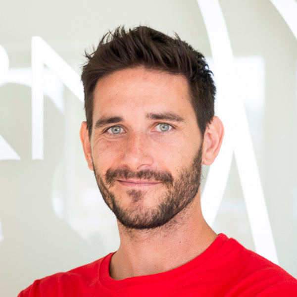

Javier Santaolalla | Divulgador
Descripción y resúmen de su trayectoria (Escrita por la misma persona, pero con fines de demostración se plasmara un fragmento de wikipedia). “Javier Santaolalla Camino (Burgos, España; 31 de agosto de 1982) es un físico, ingeniero, doctor en física de partículas y divulgador científico español. Ha trabajado en el Centro Nacional de Estudios Espaciales en Francia, el CIEMAT y la Organización Europea para la Investigación Nuclear, donde vivió el descubrimiento del bosón de Higgs a través del Experimento CMS del gran colisionador de hadrones.”
Artículo (De divulgación o investigación) Autor/a | Ciencia o área del conocimiento Descripción del artículo, puntos clave y objetivos del mismo
Autor/a | Ciencia o área del conocimiento
Descripción del artículo, puntos clave y objetivos del mismo